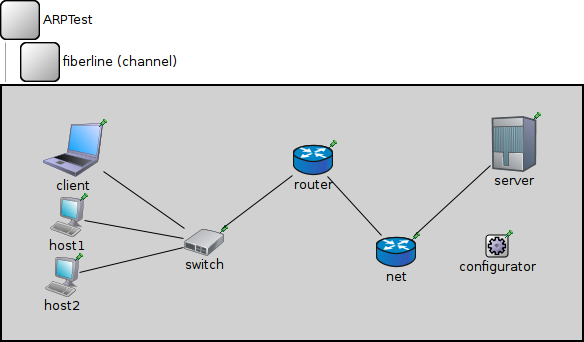
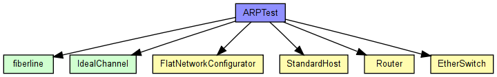

(no description)
The following diagram shows usage relationships between types. Unresolved types are missing from the diagram. Click here to see the full picture.
The following diagram shows inheritance relationships for this type. Unresolved types are missing from the diagram. Click here to see the full picture.
| Name | Value | Description |
|---|---|---|
| isNetwork |
| Name | Type | Default value | Description |
|---|---|---|---|
| client.sctp.numGapReports | int | 3 |
====== SCTP Association Parameters ================================= |
| client.sctp.rtoInitial | double | 3s | |
| client.sctp.rtoMin | double | 1s | |
| client.sctp.rtoMax | double | 60s | |
| client.sctp.rtoAlpha | double | 0.125 | |
| client.sctp.rtoBeta | double | 0.250 | |
| client.sctp.maxBurst | int | 4 | |
| client.sctp.assocMaxRetrans | int | 10 | |
| client.sctp.pathMaxRetrans | int | 5 | |
| client.sctp.maxInitRetrans | int | 8 | |
| client.sctp.sackPeriod | double | 200ms | |
| client.sctp.sackFrequency | int | 2 | |
| client.sctp.reactivatePrimaryPath | bool | false | |
| client.sctp.sendQueueLimit | int | 0 | |
| client.sctp.validCookieLifetime | double | 10s |
====== Testing ===================================================== |
| client.sctp.enableHeartbeats | bool | true |
====== Heartbeats ================================================== |
| client.sctp.hbInterval | double | 30s | |
| client.sctp.nagleEnabled | bool | true |
====== Nagle Algorithm ============================================= |
| client.sctp.naglePoint | int | 1468 | |
| client.sctp.fastRecoverySupported | bool | true |
====== Congestion Control ========================================== |
| client.sctp.sctpAlgorithmClass | string | "SCTPAlg" | |
| client.sctp.ccModule | int | 0 |
RFC4960=0 |
| client.sctp.ssModule | int | 0 |
ROUND_ROBIN=0 |
| client.sctp.arwnd | int | 65535 | |
| client.sctp.swsLimit | int | 3000 |
Limit for SWS |
| client.sctp.udpEncapsEnabled | bool | false | |
| client.pingApp.destAddr | string | "" | |
| client.pingApp.srcAddr | string | "" | |
| client.pingApp.packetSize | double | 56B |
of ping payload, in bytes |
| client.pingApp.interval | double | 1s |
time to wait between pings (can be random) |
| client.pingApp.hopLimit | double | 32 |
TTL or hopLimit for IP packets |
| client.pingApp.count | double | 0 |
stop after count ping requests, 0 means continuously |
| client.pingApp.startTime | double | uniform(0s,this.interval) |
send first ping at startTime |
| client.pingApp.stopTime | double | 0s |
send no pings after stopTime, 0 means forever |
| client.pingApp.printPing | bool | true |
dump on stdout |
| client.networkLayer.ip.procDelay | double | 0s | |
| client.networkLayer.arp.retryTimeout | double | 1s |
number seconds ARP waits between retries to resolve an IP address |
| client.networkLayer.arp.retryCount | int | 3 |
number of times ARP will attempt to resolve an IP address |
| client.networkLayer.arp.cacheTimeout | double | 120s |
number seconds unused entries in the cache will time out |
| client.ppp.ppp.mtu | int | 4470 | |
| client.eth.mac.promiscuous | bool | false |
if true, all packets are received, otherwise only the ones with matching destination MAC address |
| client.eth.mac.address | string | "auto" |
MAC address as hex string (12 hex digits), or "auto". "auto" values will be replaced by a generated MAC address in init stage 0. |
| client.eth.mac.txrate | double | 100Mbps |
maximum data rate supported by this station (bit/s); actually chosen speed may be lower due to auto- configuration. 0 means fully auto-configured. |
| client.eth.mac.duplexEnabled | bool | true |
whether duplex mode can be enabled or not; whether MAC will actually use duplex mode depends on the result of the auto-configuration process (duplex is only possible with DTE-to-DTE connection). |
| client.eth.mac.mtu | int | 1500 | |
| client.ext.filterString | string | ||
| client.ext.device | string | ||
| client.ext.mtu | int | 1500 | |
| client.tcpdump.dumpFile | string | "" | |
| client.tcpdump.threadEnable | bool | false | |
| client.tcpdump.snaplen | int | 65535 | |
| client.tcpdump.verbosity | int | 0 | |
| host1.sctp.numGapReports | int | 3 |
====== SCTP Association Parameters ================================= |
| host1.sctp.rtoInitial | double | 3s | |
| host1.sctp.rtoMin | double | 1s | |
| host1.sctp.rtoMax | double | 60s | |
| host1.sctp.rtoAlpha | double | 0.125 | |
| host1.sctp.rtoBeta | double | 0.250 | |
| host1.sctp.maxBurst | int | 4 | |
| host1.sctp.assocMaxRetrans | int | 10 | |
| host1.sctp.pathMaxRetrans | int | 5 | |
| host1.sctp.maxInitRetrans | int | 8 | |
| host1.sctp.sackPeriod | double | 200ms | |
| host1.sctp.sackFrequency | int | 2 | |
| host1.sctp.reactivatePrimaryPath | bool | false | |
| host1.sctp.sendQueueLimit | int | 0 | |
| host1.sctp.validCookieLifetime | double | 10s |
====== Testing ===================================================== |
| host1.sctp.enableHeartbeats | bool | true |
====== Heartbeats ================================================== |
| host1.sctp.hbInterval | double | 30s | |
| host1.sctp.nagleEnabled | bool | true |
====== Nagle Algorithm ============================================= |
| host1.sctp.naglePoint | int | 1468 | |
| host1.sctp.fastRecoverySupported | bool | true |
====== Congestion Control ========================================== |
| host1.sctp.sctpAlgorithmClass | string | "SCTPAlg" | |
| host1.sctp.ccModule | int | 0 |
RFC4960=0 |
| host1.sctp.ssModule | int | 0 |
ROUND_ROBIN=0 |
| host1.sctp.arwnd | int | 65535 | |
| host1.sctp.swsLimit | int | 3000 |
Limit for SWS |
| host1.sctp.udpEncapsEnabled | bool | false | |
| host1.pingApp.destAddr | string | "" | |
| host1.pingApp.srcAddr | string | "" | |
| host1.pingApp.packetSize | double | 56B |
of ping payload, in bytes |
| host1.pingApp.interval | double | 1s |
time to wait between pings (can be random) |
| host1.pingApp.hopLimit | double | 32 |
TTL or hopLimit for IP packets |
| host1.pingApp.count | double | 0 |
stop after count ping requests, 0 means continuously |
| host1.pingApp.startTime | double | uniform(0s,this.interval) |
send first ping at startTime |
| host1.pingApp.stopTime | double | 0s |
send no pings after stopTime, 0 means forever |
| host1.pingApp.printPing | bool | true |
dump on stdout |
| host1.networkLayer.ip.procDelay | double | 0s | |
| host1.networkLayer.arp.retryTimeout | double | 1s |
number seconds ARP waits between retries to resolve an IP address |
| host1.networkLayer.arp.retryCount | int | 3 |
number of times ARP will attempt to resolve an IP address |
| host1.networkLayer.arp.cacheTimeout | double | 120s |
number seconds unused entries in the cache will time out |
| host1.ppp.ppp.mtu | int | 4470 | |
| host1.eth.mac.promiscuous | bool | false |
if true, all packets are received, otherwise only the ones with matching destination MAC address |
| host1.eth.mac.address | string | "auto" |
MAC address as hex string (12 hex digits), or "auto". "auto" values will be replaced by a generated MAC address in init stage 0. |
| host1.eth.mac.txrate | double | 100Mbps |
maximum data rate supported by this station (bit/s); actually chosen speed may be lower due to auto- configuration. 0 means fully auto-configured. |
| host1.eth.mac.duplexEnabled | bool | true |
whether duplex mode can be enabled or not; whether MAC will actually use duplex mode depends on the result of the auto-configuration process (duplex is only possible with DTE-to-DTE connection). |
| host1.eth.mac.mtu | int | 1500 | |
| host1.ext.filterString | string | ||
| host1.ext.device | string | ||
| host1.ext.mtu | int | 1500 | |
| host1.tcpdump.dumpFile | string | "" | |
| host1.tcpdump.threadEnable | bool | false | |
| host1.tcpdump.snaplen | int | 65535 | |
| host1.tcpdump.verbosity | int | 0 | |
| host2.sctp.numGapReports | int | 3 |
====== SCTP Association Parameters ================================= |
| host2.sctp.rtoInitial | double | 3s | |
| host2.sctp.rtoMin | double | 1s | |
| host2.sctp.rtoMax | double | 60s | |
| host2.sctp.rtoAlpha | double | 0.125 | |
| host2.sctp.rtoBeta | double | 0.250 | |
| host2.sctp.maxBurst | int | 4 | |
| host2.sctp.assocMaxRetrans | int | 10 | |
| host2.sctp.pathMaxRetrans | int | 5 | |
| host2.sctp.maxInitRetrans | int | 8 | |
| host2.sctp.sackPeriod | double | 200ms | |
| host2.sctp.sackFrequency | int | 2 | |
| host2.sctp.reactivatePrimaryPath | bool | false | |
| host2.sctp.sendQueueLimit | int | 0 | |
| host2.sctp.validCookieLifetime | double | 10s |
====== Testing ===================================================== |
| host2.sctp.enableHeartbeats | bool | true |
====== Heartbeats ================================================== |
| host2.sctp.hbInterval | double | 30s | |
| host2.sctp.nagleEnabled | bool | true |
====== Nagle Algorithm ============================================= |
| host2.sctp.naglePoint | int | 1468 | |
| host2.sctp.fastRecoverySupported | bool | true |
====== Congestion Control ========================================== |
| host2.sctp.sctpAlgorithmClass | string | "SCTPAlg" | |
| host2.sctp.ccModule | int | 0 |
RFC4960=0 |
| host2.sctp.ssModule | int | 0 |
ROUND_ROBIN=0 |
| host2.sctp.arwnd | int | 65535 | |
| host2.sctp.swsLimit | int | 3000 |
Limit for SWS |
| host2.sctp.udpEncapsEnabled | bool | false | |
| host2.pingApp.destAddr | string | "" | |
| host2.pingApp.srcAddr | string | "" | |
| host2.pingApp.packetSize | double | 56B |
of ping payload, in bytes |
| host2.pingApp.interval | double | 1s |
time to wait between pings (can be random) |
| host2.pingApp.hopLimit | double | 32 |
TTL or hopLimit for IP packets |
| host2.pingApp.count | double | 0 |
stop after count ping requests, 0 means continuously |
| host2.pingApp.startTime | double | uniform(0s,this.interval) |
send first ping at startTime |
| host2.pingApp.stopTime | double | 0s |
send no pings after stopTime, 0 means forever |
| host2.pingApp.printPing | bool | true |
dump on stdout |
| host2.networkLayer.ip.procDelay | double | 0s | |
| host2.networkLayer.arp.retryTimeout | double | 1s |
number seconds ARP waits between retries to resolve an IP address |
| host2.networkLayer.arp.retryCount | int | 3 |
number of times ARP will attempt to resolve an IP address |
| host2.networkLayer.arp.cacheTimeout | double | 120s |
number seconds unused entries in the cache will time out |
| host2.ppp.ppp.mtu | int | 4470 | |
| host2.eth.mac.promiscuous | bool | false |
if true, all packets are received, otherwise only the ones with matching destination MAC address |
| host2.eth.mac.address | string | "auto" |
MAC address as hex string (12 hex digits), or "auto". "auto" values will be replaced by a generated MAC address in init stage 0. |
| host2.eth.mac.txrate | double | 100Mbps |
maximum data rate supported by this station (bit/s); actually chosen speed may be lower due to auto- configuration. 0 means fully auto-configured. |
| host2.eth.mac.duplexEnabled | bool | true |
whether duplex mode can be enabled or not; whether MAC will actually use duplex mode depends on the result of the auto-configuration process (duplex is only possible with DTE-to-DTE connection). |
| host2.eth.mac.mtu | int | 1500 | |
| host2.ext.filterString | string | ||
| host2.ext.device | string | ||
| host2.ext.mtu | int | 1500 | |
| host2.tcpdump.dumpFile | string | "" | |
| host2.tcpdump.threadEnable | bool | false | |
| host2.tcpdump.snaplen | int | 65535 | |
| host2.tcpdump.verbosity | int | 0 | |
| switch.relayUnit.addressTableFile | string |
set to empty string if not used |
|
| switch.relayUnit.addressTableSize | int |
max size of address table |
|
| switch.relayUnit.agingTime | double |
max idle time for address table entries (when it expires, entry is removed from the table) |
|
| switch.mac.address | string | "auto" |
MAC address as hex string (12 hex digits), or "auto". "auto" values will be replaced by a generated MAC address in init stage 0. |
| switch.mac.txrate | double | 100Mbps |
maximum data rate supported by this station (bit/s); actually chosen speed may be lower due to auto- configuration. 0 means fully auto-configured. |
| switch.mac.duplexEnabled | bool | true |
whether duplex mode can be enabled or not; whether MAC will actually use duplex mode depends on the result of the auto-configuration process (duplex is only possible with DTE-to-DTE connection). |
| switch.mac.txQueueLimit | int | 1000 |
maximum number of frames queued up for transmission; additional frames are dropped. Only used if queueModule=="" |
| switch.mac.mtu | int | 1500 | |
| net.networkLayer.ip.procDelay | double | 0s | |
| net.networkLayer.arp.retryTimeout | double | 1s |
number seconds ARP waits between retries to resolve an IP address |
| net.networkLayer.arp.retryCount | int | 3 |
number of times ARP will attempt to resolve an IP address |
| net.networkLayer.arp.cacheTimeout | double | 120s |
number seconds unused entries in the cache will time out |
| net.ppp.ppp.mtu | int | 4470 | |
| net.eth.mac.promiscuous | bool | false |
if true, all packets are received, otherwise only the ones with matching destination MAC address |
| net.eth.mac.address | string | "auto" |
MAC address as hex string (12 hex digits), or "auto". "auto" values will be replaced by a generated MAC address in init stage 0. |
| net.eth.mac.txrate | double | 100Mbps |
maximum data rate supported by this station (bit/s); actually chosen speed may be lower due to auto- configuration. 0 means fully auto-configured. |
| net.eth.mac.duplexEnabled | bool | true |
whether duplex mode can be enabled or not; whether MAC will actually use duplex mode depends on the result of the auto-configuration process (duplex is only possible with DTE-to-DTE connection). |
| net.eth.mac.mtu | int | 1500 | |
| router.networkLayer.ip.procDelay | double | 0s | |
| router.networkLayer.arp.retryTimeout | double | 1s |
number seconds ARP waits between retries to resolve an IP address |
| router.networkLayer.arp.retryCount | int | 3 |
number of times ARP will attempt to resolve an IP address |
| router.networkLayer.arp.cacheTimeout | double | 120s |
number seconds unused entries in the cache will time out |
| router.ppp.ppp.mtu | int | 4470 | |
| router.eth.mac.promiscuous | bool | false |
if true, all packets are received, otherwise only the ones with matching destination MAC address |
| router.eth.mac.address | string | "auto" |
MAC address as hex string (12 hex digits), or "auto". "auto" values will be replaced by a generated MAC address in init stage 0. |
| router.eth.mac.txrate | double | 100Mbps |
maximum data rate supported by this station (bit/s); actually chosen speed may be lower due to auto- configuration. 0 means fully auto-configured. |
| router.eth.mac.duplexEnabled | bool | true |
whether duplex mode can be enabled or not; whether MAC will actually use duplex mode depends on the result of the auto-configuration process (duplex is only possible with DTE-to-DTE connection). |
| router.eth.mac.mtu | int | 1500 | |
| server.sctp.numGapReports | int | 3 |
====== SCTP Association Parameters ================================= |
| server.sctp.rtoInitial | double | 3s | |
| server.sctp.rtoMin | double | 1s | |
| server.sctp.rtoMax | double | 60s | |
| server.sctp.rtoAlpha | double | 0.125 | |
| server.sctp.rtoBeta | double | 0.250 | |
| server.sctp.maxBurst | int | 4 | |
| server.sctp.assocMaxRetrans | int | 10 | |
| server.sctp.pathMaxRetrans | int | 5 | |
| server.sctp.maxInitRetrans | int | 8 | |
| server.sctp.sackPeriod | double | 200ms | |
| server.sctp.sackFrequency | int | 2 | |
| server.sctp.reactivatePrimaryPath | bool | false | |
| server.sctp.sendQueueLimit | int | 0 | |
| server.sctp.validCookieLifetime | double | 10s |
====== Testing ===================================================== |
| server.sctp.enableHeartbeats | bool | true |
====== Heartbeats ================================================== |
| server.sctp.hbInterval | double | 30s | |
| server.sctp.nagleEnabled | bool | true |
====== Nagle Algorithm ============================================= |
| server.sctp.naglePoint | int | 1468 | |
| server.sctp.fastRecoverySupported | bool | true |
====== Congestion Control ========================================== |
| server.sctp.sctpAlgorithmClass | string | "SCTPAlg" | |
| server.sctp.ccModule | int | 0 |
RFC4960=0 |
| server.sctp.ssModule | int | 0 |
ROUND_ROBIN=0 |
| server.sctp.arwnd | int | 65535 | |
| server.sctp.swsLimit | int | 3000 |
Limit for SWS |
| server.sctp.udpEncapsEnabled | bool | false | |
| server.pingApp.destAddr | string | "" | |
| server.pingApp.srcAddr | string | "" | |
| server.pingApp.packetSize | double | 56B |
of ping payload, in bytes |
| server.pingApp.interval | double | 1s |
time to wait between pings (can be random) |
| server.pingApp.hopLimit | double | 32 |
TTL or hopLimit for IP packets |
| server.pingApp.count | double | 0 |
stop after count ping requests, 0 means continuously |
| server.pingApp.startTime | double | uniform(0s,this.interval) |
send first ping at startTime |
| server.pingApp.stopTime | double | 0s |
send no pings after stopTime, 0 means forever |
| server.pingApp.printPing | bool | true |
dump on stdout |
| server.networkLayer.ip.procDelay | double | 0s | |
| server.networkLayer.arp.retryTimeout | double | 1s |
number seconds ARP waits between retries to resolve an IP address |
| server.networkLayer.arp.retryCount | int | 3 |
number of times ARP will attempt to resolve an IP address |
| server.networkLayer.arp.cacheTimeout | double | 120s |
number seconds unused entries in the cache will time out |
| server.ppp.ppp.mtu | int | 4470 | |
| server.eth.mac.promiscuous | bool | false |
if true, all packets are received, otherwise only the ones with matching destination MAC address |
| server.eth.mac.address | string | "auto" |
MAC address as hex string (12 hex digits), or "auto". "auto" values will be replaced by a generated MAC address in init stage 0. |
| server.eth.mac.txrate | double | 100Mbps |
maximum data rate supported by this station (bit/s); actually chosen speed may be lower due to auto- configuration. 0 means fully auto-configured. |
| server.eth.mac.duplexEnabled | bool | true |
whether duplex mode can be enabled or not; whether MAC will actually use duplex mode depends on the result of the auto-configuration process (duplex is only possible with DTE-to-DTE connection). |
| server.eth.mac.mtu | int | 1500 | |
| server.ext.filterString | string | ||
| server.ext.device | string | ||
| server.ext.mtu | int | 1500 | |
| server.tcpdump.dumpFile | string | "" | |
| server.tcpdump.threadEnable | bool | false | |
| server.tcpdump.snaplen | int | 65535 | |
| server.tcpdump.verbosity | int | 0 | |
| configurator.networkAddress | string | "192.168.0.0" |
network part of the address (see netmask parameter) |
| configurator.netmask | string | "255.255.0.0" |
host part of addresses are autoconfigured |
network ARPTest { types: channel fiberline extends DatarateChannel { delay = 1us; datarate = 512Mbps; } submodules: client: StandardHost { @display("p=71,64;i=device/laptop_l"); } host1: StandardHost { @display("p=65,131;i=device/pc"); } host2: StandardHost { @display("p=60,191;i=device/pc"); } switch: EtherSwitch { @display("p=202,156"); } net: Router { @display("p=394,166"); } router: Router { @display("p=311,74"); } server: StandardHost { @display("p=512,58;i=device/server_l"); } configurator: FlatNetworkConfigurator { @display("p=495,160"); } connections: client.ethg++ <--> switch.ethg++; switch.ethg++ <--> host1.ethg++; switch.ethg++ <--> host2.ethg++; router.ethg++ <--> switch.ethg++; router.pppg++ <--> fiberline <--> net.pppg++; server.pppg++ <--> fiberline <--> net.pppg++; }